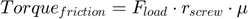
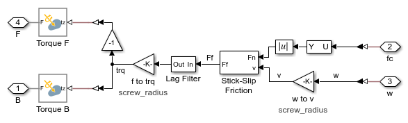
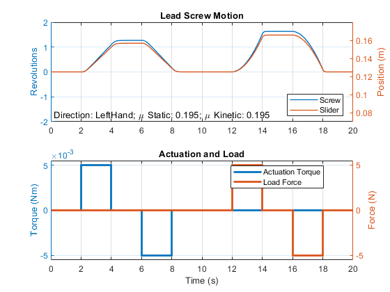
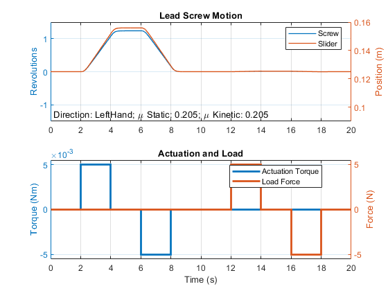

Lead Screw with Friction
This example models a lead screw with friction. The constraint force in the lead screw is measured and used to calculate the friction torque within the lead screw. A continuous stick-slip friction model is used to determine the coefficient of friction based on the relative rotational speed of the two parts connected by the lead screw.
Contents
Model
Lead Screw Friction Subsystem
This subsystem calculates and applies the friction torque to the two parts connected by the lead screw joint. The following free-body diagram shows the relevant parameters and forces acting on the system.
The friction equation is:

If , the lead screw is non-backdriveable. Applying an axial load force will not be sufficient to permit the lead screw to move.
Simulation Results from Simscape Logging
The plot below shows the actuation torque of the lead screw. In this test, the coefficient of friction is low enough that the load force can backdrive the lead screw.
The Lead Screw Joint can be configured such that positive rotation leads to positive translation.
Increasing the coefficient of friction higher than the tangent of the lead angle will make the lead screw non-backdriveable. Applying an axial load force will not be sufficient for the screw to move.
